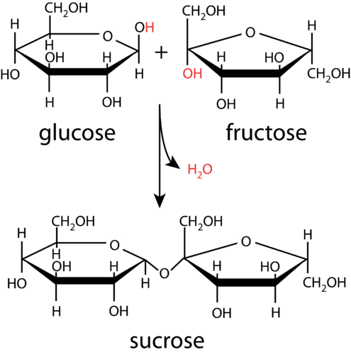
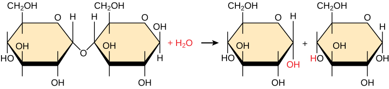
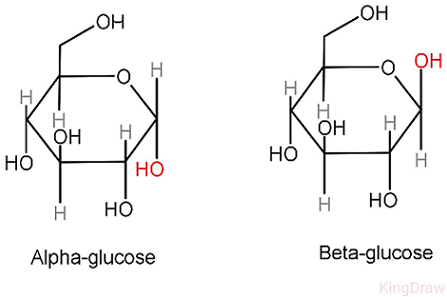
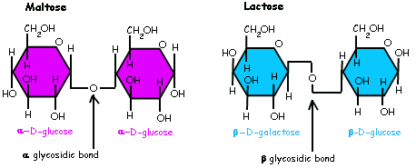
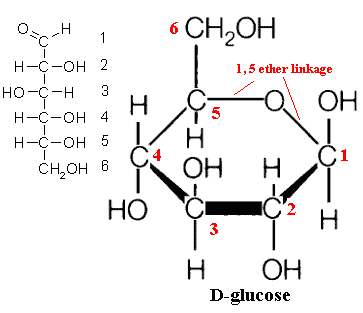
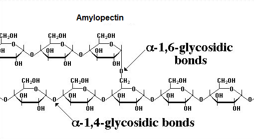

The bond between monosaccharides is a covalent bond that's formed by condensation reaction. The bond is called Glycosidic linkage.
Condensation
The process of forming glycosidic bond is called condensation
2 hydroxyl functional goups (OH) joins together and throws away H2O.

condensation
Hydrolysis
The process of breaking the bond (by water) is called hydrolysis
Through the addition of H2O (water), hydroxyl groups are back and The origional bond is broke.

hydrolysis
Alpha Glucose & Beta Glucose
The first Carbon's H and OH's position is changed, which determines whether it's a alpha glycosidic linkage or beta glycosidic linkage

Therefore there could be alpha and beta glycosidic linkage.
Human lacks digestive enzymes of hydrolyzing most beta-glycosidic bonds, which makes polysaccharides with beta-glycosidic bonds (Chitin, Cellulose) undigestable for human

1-4 & 1-6 glycosidic bond
The glycosidic bond can be formed between the first and the fourth carbon, or the first and the sixth carbon on the two monosaccharides
To count carbon, we start from the oxygen and count the carbons clockwise. This image shows the carbon numbers on a glucose:

Different bonds makes branches, usually more branches of alpha linkage means it's easier to digest by us, because there are more enzyme attachment points.
In human body's case, the glycogen has 1-4 and many 1-6 alpha glycosidic linkages and it's highly branched, so we can easily break it down to supply our blood sugar. This process is directed by the blood sugar control hormones, which maintains our body's homeostasis.
The image below shows how a Amylopectin is branchous by having a a1-6 glycosidic bond.
